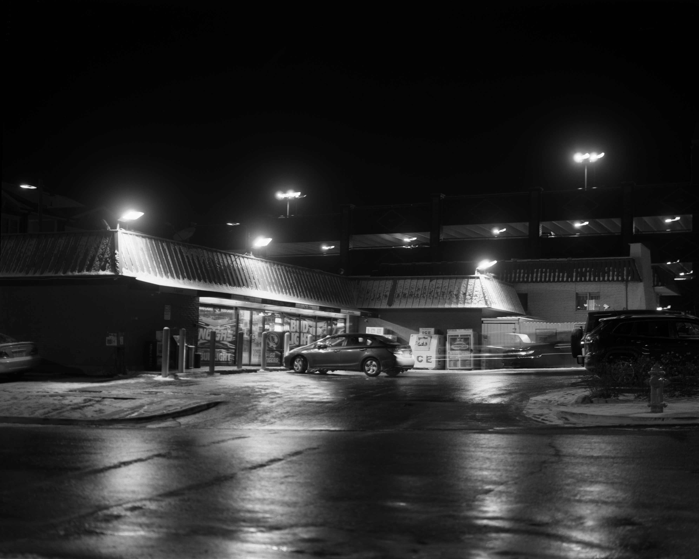
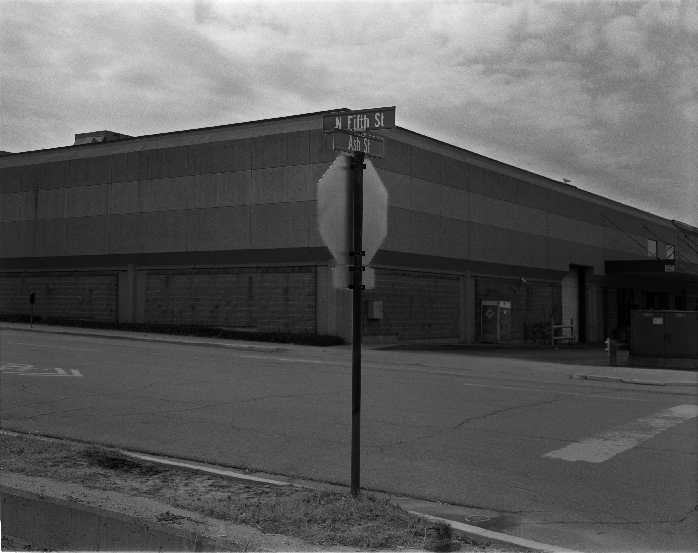
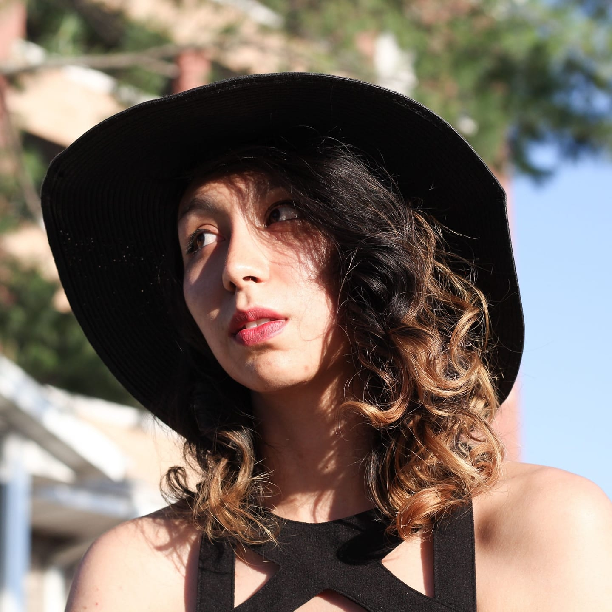

A Snapshot of Photography
An introduction into photography
Gallery


Welcome, all levels of photographers!
Learn about what has been created with a camera through past and current artists.
And see the possibilities of what you can personally create with your own camera.
Hopefully, you shall be insipred to pick up a camera and create some new content.
About the Creator
Azucena Gonzalez also known as Auzzie is currently a student at the University of Missouri-Columbia.
Photography is a beloved hobby of hers. She continues to expand her knowledge in photography and experiment with her creativity.
She is also majoring in convergence jounalism with an emphasis in multi-media production.
And currently a reporter for the Columbia Missourian and working on a long-form journalsim story with a team for Missouri Business Alert.

Comments
Comments here
Get in touch!
xxx-xxx-xxxx